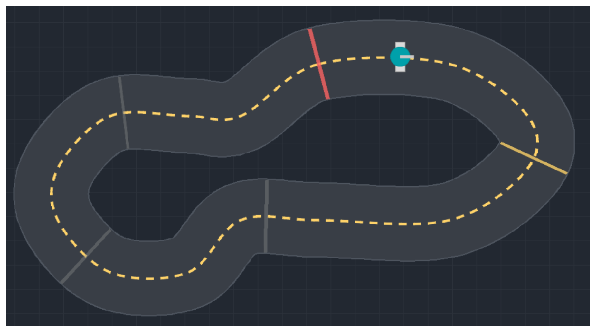
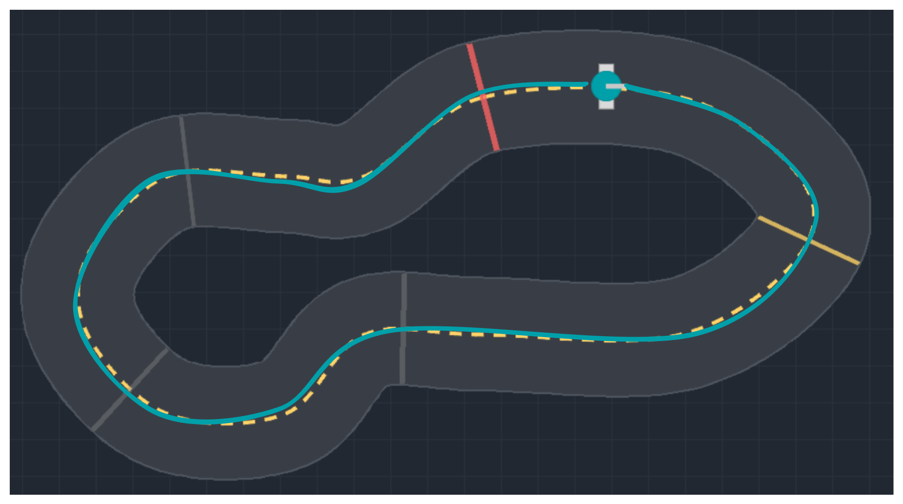
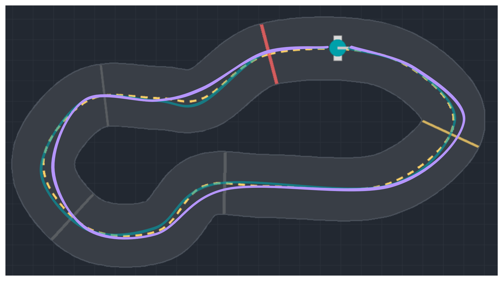
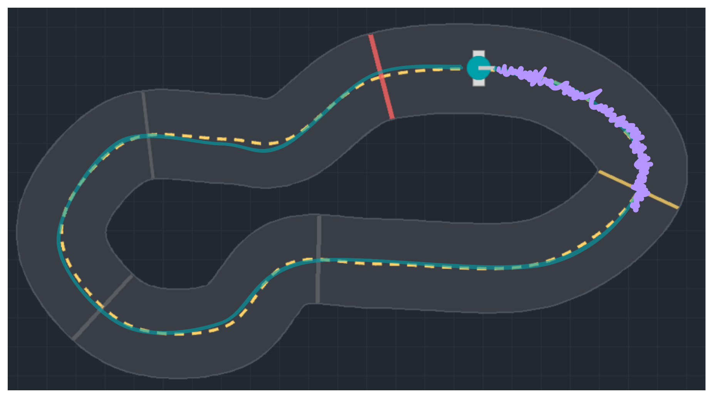
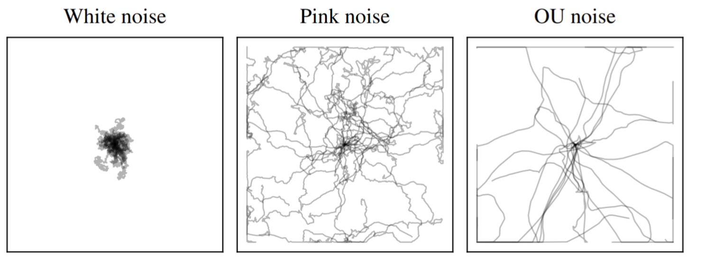
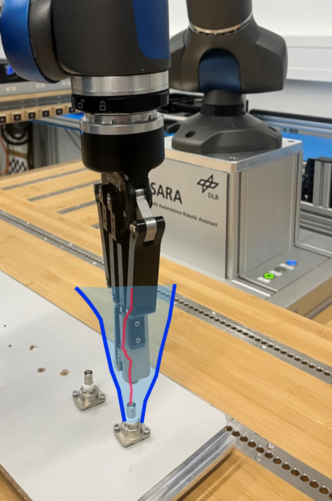
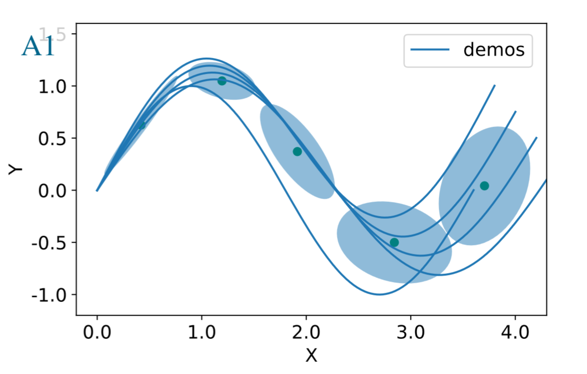

Exploration in Continuous Control RL

What is Exploration in RL?




$a_t = \mu(s_t; \theta)$, $\quad$ deterministic controller
$a_t \sim \pi_\theta(a_t | s_t) = f(\mu, \textcolor{6741d9}{\epsilon}, \ldots)$, stochastic controller
PD Controller as Policy
$a_t = \textcolor{#1864ab}{K_p} \textcolor{#a61e4d}{e_t} + \textcolor{#1864ab}{K_d} \textcolor{#a61e4d}{\frac{e_t - e_{t -1}}{\Delta t}}$
$a_t = \begin{bmatrix} \textcolor{#1864ab}{K_p} & \textcolor{#1864ab}{K_d} \end{bmatrix} \cdot \begin{bmatrix} \textcolor{#a61e4d}{e_t} \\ \textcolor{#a61e4d}{\frac{e_t - e_{t -1}}{\Delta t}} \end{bmatrix}$
$a_t = \textcolor{#1864ab}{\theta}^\top \textcolor{#a61e4d}{s_t}$
$\mu_{\textcolor{#1864ab}{\theta}}(\textcolor{#a61e4d}{s_t}) = \textcolor{#1864ab}{\theta}^\top \textcolor{#a61e4d}{s_t}$ a linear policy!
Outline
- Exploration in Parameter Space
- Exploration in Action Space
- Correlated Noise
- Guided Exploration
Exploration in Parameter Space
$a_t = \mu(s_t; \theta_{\mu} + \epsilon)$, $\quad \epsilon \sim \mathcal{N}(0, \sigma)$
$\epsilon$ is sampled once per episode
Example:
$\tilde{\theta} = \begin{bmatrix} K_p \\ K_d \end{bmatrix} + \begin{bmatrix} \epsilon_1 \\ \epsilon_2 \end{bmatrix}$
\[ a_t = (\theta_{\mu} + \theta_{\epsilon})^{\top}s_t \]
Remarks
- Smooth exploration
- Effective for sparse rewards
- Does not use immediate reward
- Does not scale easily
Example: BBO, Finite Differences


Learning from human feedback
Raffin, Antonin "Enabling Reinforcement Learning on Real Robots." Diss. TUM, 2024.
Adapting quickly: Retrained from Space
Exploration in Action Space

$ a_t = \mu(s_t; \theta_{\mu}) + \epsilon_t$, $\quad \epsilon_t \sim \mathcal{N}(0, \sigma)$
$\epsilon_t$ is sampled at every step
Remarks
- Effective in simulation (default)
- Shaky behavior, dangerous for real robots
- Real systems are low-pass filters
In between parameter and action space (1)
$\epsilon_t \sim \mathcal{N}(0, \sigma)$
sampled every steps \[ a_t = \mu(s_t; \theta_{\mu}) + \epsilon_t \]
$\theta_{\epsilon} \sim \mathcal{N}(0, \sigma_{\epsilon}) $
sampled every $n$ steps \[ a_t = \mu(s_t; \theta_{\mu}) + \epsilon(s_t; \theta_{\epsilon}) \]

Antonin Raffin, Jens Kober & Freek Stulp. "Smooth exploration for robotic reinforcement learning." CoRL, 2022.
In between parameter and action space (2)
Rückstieß, T., et al. "State-dependent exploration for policy gradient methods." ECML, 2008.
Trade-off between
return and continuity cost

Results
- Exploration in Parameter Space
- Exploration in Action Space
- Correlated Noise
- Guided Exploration
Correlated Noise

$a_t = \mu(s_t) + \sigma(s_t) \varepsilon_t$ , $\quad \dot{\varepsilon_t} = \ldots$
Ex:
$
|\hat{\varepsilon}(f)|^{2} \propto f^{-\beta}, \quad \text{where} \quad \hat{\varepsilon}(f) = \mathcal{F}[\varepsilon(t)](f)
$
White Noise ($\beta = 0$), Pink Noise ($\beta = 1$), Red/Brownian Noise ($\beta = 2$)
Eberhard, Onno, et al. "Pink noise is all you need: Colored noise exploration in deep reinforcement learning." ICLR, 2023.
Guided Exploration


- Guide RL with demonstrations
- Exploration scale depends on the uncertainty
Padalkar, Abhishek, et al. "Towards safe and efficient learning in the wild: Guiding RL with constrained uncertainty-aware movement primitives." RA-L (2025).
Conclusion
- Exploration in parameter and action space
- Smooth exploration for robots
- Guided exploration